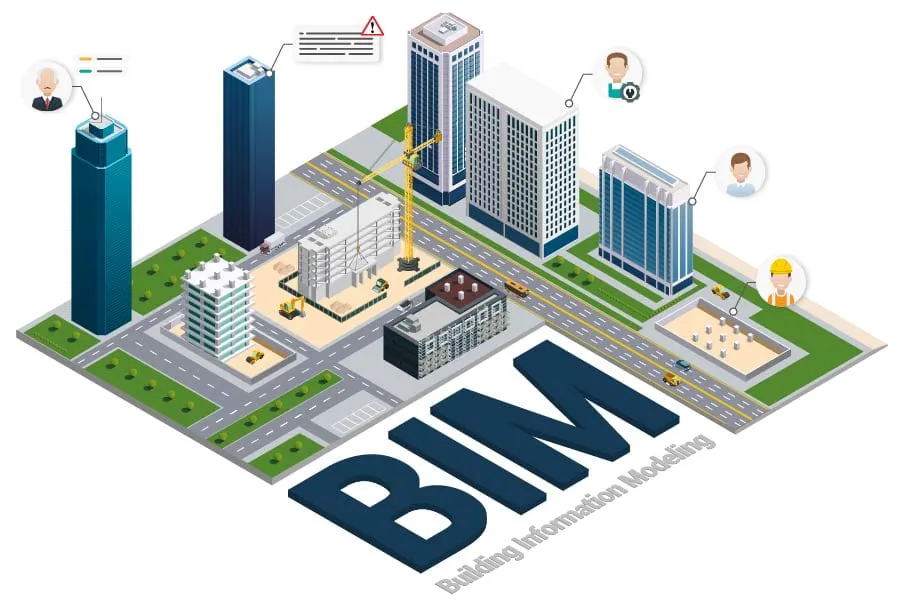

Digital Engineering & Documentation
Build a digital foundation that lasts as long as your asset — scan-to-BIM, digital twin integration, and ISO 19650-aligned information management from concept to operation.
From Physical Asset to Digital Intelligence
Sentra's digital engineering services create accurate, structured digital representations of physical assets that support design, construction, handover, and operations across the full asset lifecycle.
BIM, Scanning, and Digital Twins — Delivered to International Standards
Infrastructure and building assets generate information throughout their lifecycle — from design drawings and construction records to inspection reports and maintenance logs. Without a disciplined approach to digital engineering and information management, this data becomes fragmented, inconsistent, and ultimately unavailable when it is needed most: during operations, maintenance, and eventual renewal. Sentra's digital engineering service creates accurate, standards-aligned digital representations of new and existing assets. For existing assets, our scan-to-BIM workflow begins with 3D laser scanning or photogrammetric survey, producing a precise point cloud that is converted into an intelligent, parametric BIM model at the client's required level of development (LOD 200–400). For new projects, we support BIM coordination, clash detection, and information delivery throughout design and construction. Digital twin integration connects the BIM model to live sensor data from our monitoring platforms — creating a dynamic, data-enriched asset model that evolves with the physical structure in real time. All information is structured and delivered in accordance with ISO 19650, ensuring that project information remains accessible, searchable, and usable for the life of the asset.
Parametric BIM models built to the client's LOD requirements — from LOD 200 massing models for early design stages through LOD 400 fabrication-ready models for construction and facility management.
High-density 3D laser scanning of existing structures, buildings, and infrastructure using terrestrial LiDAR and mobile mapping systems — capturing millimetre-accurate as-built geometry of complex environments.
BIM models are connected to live sensor data streams from structural, environmental, and operational monitoring systems — creating a digital twin that reflects the current real-world state of the asset.
Structured document management across design, construction, and operations phases — with version control, approval workflows, naming conventions, and audit trails aligned to ISO 19650 information requirements.
Structured record packages for regulatory handover, building control sign-off, and statutory submissions — including O&M manuals, as-built documentation, commissioning records, and inspection certificates.
Asset register creation, classification to international standards (Uniclass, OmniClass), and integration with CAFM and CMMS platforms — ensuring asset information remains structured and accessible in operations.
Measurable Outcomes
Quantifiable results delivered through our monitoring and engineering solutions across infrastructure projects.
Track Record
Proven deliveryEfficiency
Optimised operationsReliability
Always onHow It Works
A structured digital engineering process from physical reality to standards-compliant digital model, ready for operations.


See Our Solutions in Action
Real deployments, real impact — from field instrumentation to command centre dashboards.


How It Helps Your Organisation
Digital engineering creates value at every stage of the asset lifecycle — from accelerating design coordination to supporting 30-year asset management decisions.
What It Prevents
Poor documentation and unstructured digital information are silent killers of asset management efficiency. Digital engineering eliminates these systemic problems before they become costly.
Industries We Serve
Sentra's digital engineering capability serves the full range of clients who own, develop, and manage major built assets across India and internationally.
Why Choose Sentra
Digital Engineering Projects
How our BIM, scanning, and digital twin services have delivered value for infrastructure owners and contractors.


Related Solutions
Other services that work alongside digital engineering for complete asset lifecycle management.
Frequently Asked Questions
Can't find what you're looking for? Contact our team — we're happy to help.
Scan-to-BIM is the process of creating an accurate BIM model of an existing structure from 3D laser scan data. You need it when working with existing assets where accurate as-built records do not exist or are unreliable — for example, before a renovation, structural assessment, extension, or refurbishment project. It replaces the inaccurate process of manually measuring and modelling from old paper drawings. The resulting model accurately represents what was built, not what was designed.
We deliver BIM models to the LOD specified in the client's BIM requirements or Employer's Information Requirements (EIR). We regularly deliver LOD 200 (massing and approximate geometry) for early design, LOD 300 (accurate geometry and basic attributes) for design coordination, LOD 350 (construction coordination) for buildability review, and LOD 400 (fabrication-ready) for construction and facility management. LOD is agreed at the start of each project in the BIM Execution Plan.
Our primary BIM authoring tools are Autodesk Revit (buildings and structures), Autodesk Civil 3D (civil infrastructure), and Bentley OpenBridge Modeler (bridge structures). For scan processing we use Autodesk ReCap and Faro Scene. For coordination and clash detection we use Autodesk Navisworks and BIM 360. For Common Data Environment we support BIM 360 Docs, Asite, Aconex, and ProjectWise. We can work within the client's existing CDE platform rather than imposing our own.
ISO 19650 is the international standard for organising and digitising information about buildings and civil engineering works using BIM. It specifies how project information should be structured, named, stored, and transferred between parties throughout the project lifecycle. While ISO 19650 is not yet uniformly mandated in India, it is increasingly required by international infrastructure clients, multinational EPC contractors, and major government programmes aligned with smart city and national infrastructure initiatives. Delivering to ISO 19650 demonstrates digital maturity and positions you for international procurement.
A BIM model is a static digital representation of an asset — it captures geometry, attributes, and relationships as they were at a point in time. A digital twin is a BIM model connected to live data streams from IoT sensors, maintenance systems, and operational records — creating a continuously updated digital representation that mirrors the current real-world state of the physical asset. The digital twin enables real-time performance monitoring, anomaly detection, and predictive analytics in the spatial context of the physical model.
Yes. We provide document digitisation, classification, and structured filing services that convert paper-based drawing and document archives into searchable, structured digital records. Documents are classified using agreed naming conventions, indexed with metadata (document type, discipline, revision, date), and loaded into a digital document management system. Where original paper drawings need to be validated against current as-built conditions, we combine document digitisation with physical LiDAR scanning to verify accuracy.